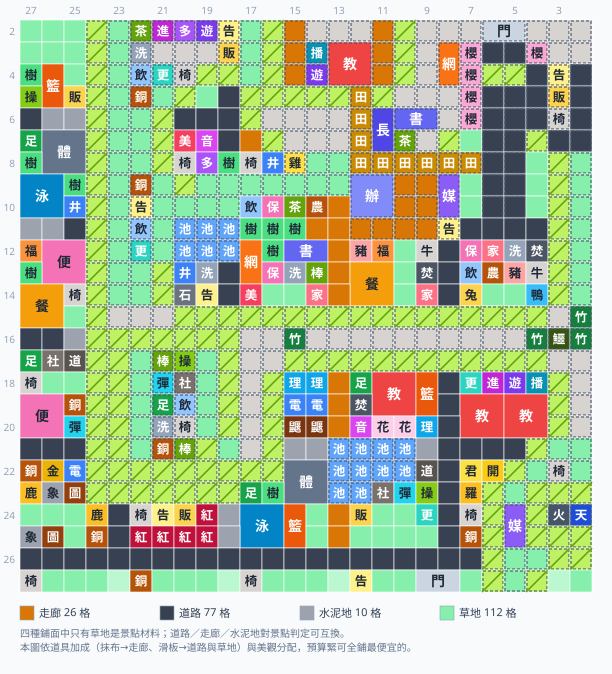

口袋學院物語2 溪谷小鎮完美佈局
第四張地圖「溪谷小鎮」（26×26）的完美佈局：一張圖同時成立全部 29 個人氣景點，共 150 棟建築、每一棟都走得到。溪谷是五座城鎮裡唯一的三層地形（谷底／台地／高地），而且一開局從校門只走得到 16 格、6 棟原生校舍全被斷崖困住——解法只要用橡皮擦擦掉 3 格。這一版跟進冬郵小鎮，把設計優先序改成動線流暢優先：死路支線從 15% 壓到 13%，剩下走不到的 15 格全是原生結構、一格都沒動（前後對比）。可以點下面的按鈕直接載入佈局模擬器。

看法與前兩鎮那兩張相同：格子上的字是設施簡稱，一棟多格建築畫成一個大方塊，虛線深色外框是高地（高地空地填成暖灰），帶斜線的黃綠色是斜坡。四種鋪面（道路／走廊／水泥地／草地）刻意不逐格標字，改看圖下方的鋪面圖例（色塊＋格數）。邊緣數字是遊戲內座標（上方 Y、左側 X）。溪谷這張圖要特別注意暖灰與黃綠色的量：全圖 676 格裡有 384 格在台地或高地上，圖上那三條橫貫的黃綠色斜線帶（X15／X16／X17）就是谷底通往南平原的唯一樓梯。
溪谷小鎮的地形：唯一的三層地圖
健康鎮與冬郵小鎮的高低差都只有一階，繞一下就過去了；溪谷小鎮是三層——谷底（平地）、台地（高地 1 層）、高地（高地 2 層）各占一大塊，而且相鄰兩層差 2 階的地方永遠是斷崖，怎樣都過不去（遊戲只會在高低差 1 的邊界自動生成斜坡）。
| 高度 | 格數 | 其中空地 | 主要區塊 |
|---|---|---|---|
| 谷底（平地） | 292（43%） | 292 | 南部大平原、中央谷底、西溪帶、北支谷、東峽谷 |
| 台地（高地 1 層） | 220（33%） | 220 | 西中台地帶、北緣台地、舊校舍臺地肩、東緣廊帶、X15–X17 坡道帶、東南坡 |
| 高地（高地 2 層） | 164（24%） | 72 | 舊校舍臺地、北高地、西高地、東南丘、校門道路、兩座水塘 |
三件事直接決定了這張圖怎麼蓋：
- 52 條斷崖，集中在三處。①舊校舍臺地的南壁與西壁（原生辦公室、走廊、草坪那一整塊臺地對著中央谷底直接落 2 階）；②東峽谷兩壁——校門道路是一條架在高地上的柏油路，兩側各有一條一格寬的裂谷；③南池環崖（池面記在高地、四周是谷底）。其餘所有台地邊緣都只差 1 階，天然就有坡道。
- 天然坡道 136 格，最重要的是兩條橫貫全圖的坡道帶。X15（Y4–Y24）整列都是「台地空地緊鄰谷底」＝谷底往南的總樓梯；X17（Y4–Y15）再往南平原下一級；夾在中間的 X16 是換坡平台。西高地的東西兩緣、北高地四緣、東南丘的北西兩緣也全是天然坡。
- 只有 e2/e3 的「空地」才算坡道。台地上原本鋪著草地、櫻花、田埂路、竹林的格子不是空地，所以不會生成坡道；反過來說，你在坡道格上鋪任何東西（連草地都算），那一格就不再是坡道，整片高地可能瞬間上不去。這是溪谷最容易踩的雷。
核心謎題：開局只走得到 16 格，擦 3 格就全通
把溪谷小鎮的原始地形丟進模擬器，按「從校門開始能走到哪」算一次，答案是只有 16 格——就是北門（X2/Y6–Y5）連著的那條校門柏油路本身。全圖 628 個可通行格裡有 612 格走不到，而且6 棟原生建築全部被判「走不到」：
| 原生建築 | 座標 | 被什麼困住 |
|---|---|---|
| 教室（2×2） | X3–X4 / Y13–Y12 | 北高地，四周只有台地，而台地與校門路之間是斷崖 |
| 辦公室（2×2） | X9–X10 / Y12–Y11 | 舊校舍臺地，南壁與西壁都是高差 2 的斷崖 |
| 多媒體教室（1×2） | X9–X10 / Y8 | 同上，西鄰的原生走廊是走不到的口袋 |
| 公告欄 | X11 / Y8 | 同上 |
| 養雞小屋 | X8 / Y15 | 舊校舍臺地西端 |
| 飼育鱷魚 | X16 / Y3 | 被東緣的竹林與高地夾住 |
原因很單純：校門那條柏油路是「路面」而不是「空地」，所以它推導不出斜坡。學生站在高地上的柏油路面上，旁邊差 1 階的台地明明看得到，卻因為腳下那格不是空地而沒有坡道，走不下去。解法就是拿橡皮擦擦掉 3 格——遊戲一開始就有橡皮擦，這一步不用花錢：
| # | 擦哪一格 | 原本是 | 擦掉之後 |
|---|---|---|---|
| 1 | X4 / Y6 | 原生道路（高地 2 層） | 變空地 → 對西鄰 X4/Y7 的台地長出坡道 → 接上舊校舍臺地肩（學習／選舉／約會的舞台） |
| 2 | X4 / Y5 | 原生道路（高地 2 層） | 變空地 → 對東鄰 X4/Y4 的台地長出坡道 → 接上東緣廊帶，再由 X7/Y4 的天然坡下到谷底 |
| 3 | X9 / Y20 | 原生草地（高地 2 層） | 變空地 → 對西鄰 X9/Y21 的台地長出坡道 → 舊校舍臺地接上西中台地帶 |
效果：可達格從 16 → 613，被包圍的建築從 6 → 0，天然坡道從 136 變 139。兩格道路擦掉之後並不會斷了北門的動線（斜坡本身可以走），反而把校門路變成「東西雙向的天橋」——往西下臺地肩、往東下廊帶，兩條路都通。
X15／X16／X17：三列坡道保留帶
溪谷的南北兩半被一條三格寬的台地帶隔開：X15 是「台地對谷底」的坡道列、X17 是「台地對南平原」的坡道列，X16 是兩者中間的換坡平台。谷底（中央市街）與南部大平原（新校區）之間沒有第二條路——除了西高地邊緣那條繞遠的迂迴道。
所以這張圖上這三列一格都不鋪、一格都不種：X15 與 X17 是坡道本體，鋪下去坡道就沒了；X16 雖然不是坡道，但它是唯一的「換坡走道」，填滿就等於在兩層樓梯之間砌一道牆。本圖 X16 留了 13 個換坡口（Y5–Y14、Y16、Y17、Y24）。圖上你會看到中間那條三列寬的暖灰＋黃綠斜線帶，那不是還沒蓋，那是刻意留白的樓梯間。
跟前兩鎮差在哪
| 健康鎮 | 冬郵小鎮 | 溪谷小鎮 | |
|---|---|---|---|
| 地圖尺寸 | 26×24 | 26×26 | 26×26 |
| 校門位置 | 左側（直式） | 上緣 Y8–Y7 | 上緣 Y6–Y5，而且架在高地上 |
| 高低差 | 兩層 | 兩層 | 三層（斷崖 52 條） |
| 開局可達格 | 幾乎全圖 | 大半 | 16 格（擦 3 格後 613 格） |
| 開局被困的原生建築 | 1 棟 | 3 棟 | 6 棟 |
| 水塘 | 34 格，全留 | 76 格，鑿 2 格開水道 | 16 格，全留（見下） |
| 可蓋平地 | 分布均勻 | 集中南半部 | 只有 43% 是谷底，其餘要爬台地 |
| 路網座標 | X7/X12/X17/X22 ＋ Y21/Y16/Y11/Y6 | X6/X11/X16/X21/X26 ＋ Y23/Y18/Y13/Y8/Y3 | X6/X11/X21/X26 ＋ Y23/Y18/Y13/Y8/Y3（X16 那條大道整列在台地上，鋪不出來，剛好讓給坡道帶） |
| 幹道脊椎（鋪道路） | X17 ＋ Y11/Y16 | X16 ＋ Y8/Y18 | X26 ＋ Y8（北門 → 東緣廊帶下谷底 → Y8 縱街南下 → X26 橫幹道 → 南門） |
| 鋪面配比 | 走廊 101／道路 84／草地 75／水泥地 14 | 草地 102／道路 82／走廊 80／水泥地 16 | 草地 112／道路 77／走廊 26／水泥地 10 |
| 建築棟數 | 148 | 124 | 150（其中 45 棟在台地／高地上） |
溪谷特有的四個坑
- 櫻並木一棵都別砍。校門路兩側有 4 棵原生櫻花樹（X3/Y7、X5/Y7、X6/Y7、X3/Y4），它們是「約會」的材料（樹林／櫻花樹二選一）。這張圖4 棵全部保留——「約會」直接用原生櫻花配上台地肩的網球場與圖書室（判定窗口 X3/Y10）就成立了。（圖上第 5 棵櫻花在 X4/Y7，是環化 pass 補種的景觀，不是原生，也不參與「約會」。）擦坡道的時候千萬別順手把櫻花擦掉：櫻花不可通行，看起來很像「擋路的雜物」，但它比一格空地值錢得多。
- 兩座水塘一格都不必動。溪谷的水塘只有 16 格：北池 6 格（X11–X12/Y18–Y20）緊貼舊校舍草坪，本身就是「水岸」的材料；南池 10 格（X21–X23/Y10–Y13）的池面記錄在高地 2 層，而四周是谷底——也就是說，鑿掉南池只會留下一根「對四鄰都是斷崖」的高地孤柱，連走上去都做不到，完全沒有收益。冬郵那招「鑿 2 格水塘打通湖心地」在這裡完全不適用，所以本圖水塘預算直接設 0。
- 多媒體教室的唯一出入口是一格寬的峽谷。原生多媒體教室（X9–X10/Y8）站在舊校舍臺地上，西鄰是走不到的原生走廊、北鄰是不可通行的田埂路，真正能「靠上去」的只有東峽谷那兩格谷底：X9/Y7 與 X10/Y7。這兩格在本圖裡永久留空——蓋掉的話，多媒體教室與旁邊的公告欄立刻變成走不到，「學習」（校長室＋圖書室＋多媒體教室）也一起沒了。同理，公告欄的出入口是 X11/Y7。
- 台地上切不出街廓，大型設施要「手動卡位」。產生器的棋盤路網只鋪在谷底（高地不鋪路，要留斜坡），街廓也只從谷底的空地切——所以整片台地與高地不會被自動排進任何分區。舊校舍臺地肩那 19 格是「學習＋選舉＋約會」三個景點的共同舞台，只能先手動把校長室、圖書室、茶室、網球場放進去；東南丘丘頂只有 2 格不是坡道，宇宙火箭與天象館也只能手動放。這不是偷吃步，玩家在遊戲裡本來就是自己挑格子蓋。
分區規劃
溪谷的擴張方向是北門 → 東緣廊帶下谷底 → 中央谷底市街 → 翻過 X15–X17 坡道帶 → 南部大平原新校區 → 東南丘。分區名跟下面「階段 × 分區」那張表是同一套；最後一欄是該區的街道鋪面。
- 校門口櫻並木 ＋ 舊校舍臺地肩（X2–X7 / Y7–Y11）· 道路／走廊 · 第 1 階段北門與 4 棵原生櫻花樹所在。校長室 X6–X7/Y11（全校唯一）、圖書室 X6/Y10–Y9、茶室 X7/Y10、網球場 X3–X4/Y8 全部手動卡在這 19 格台地上，一次撐起三個景點：選舉（校長室＋原生辦公室＋茶室，窗口 X6/Y13）、學習（校長室＋圖書室＋原生多媒體，窗口 X6/Y11）、約會（網球場＋原生櫻花＋圖書室，窗口 X3/Y10）。三個景點只用了 7 格新建築，其餘全靠原生校舍。
- 北高地舊教室（X2–X4 / Y10–Y16）· 走廊 · 第 1 階段原生教室（2×2，X3–X4/Y13–Y12）原地保留，四周本來就是天然坡；剩下的非坡道格放了廣播室與遊戲區各一。這一帶只要別把教室的出入口那格鋪掉就沒問題。
- 北緣台地花園（X2–X5 / Y17–Y23）· 草地步道北緣那片 e2 台地，是全圖最好開發的高地：放了 11 棟小型設施（茶室、進路室、多功能室、遊戲區、公告欄、洗手間、販賣機、飲水處、更衣室、長椅、銅像），每一列最外側留成草地步道接上坡道。往南接西中台地帶（X6–X14/Y21–Y23，再放 4 棟），一路可以走到 X15 坡道帶。
- 北支谷藝術棟（X5–X10 / Y16–Y20）· 道路只由西側台地進入的死巷小峽谷，14 格谷底。安靜、離主動線遠，剛好給專科教室：美術室 X7/Y20、音樂室 X7/Y19、多功能室 X8/Y19 → 成立「藝術」（窗口 X5/Y22）。
- 舊校舍核心 ＋ 東峽谷（X7–X11 / Y5–Y15）· 走廊／道路 · 第 1 階段原生的辦公室（X9–X10/Y12–Y11）、多媒體教室（X9–X10/Y8）、公告欄（X11/Y8）、養雞小屋（X8/Y15）、草坪與田埂路全部保留原位，一棟都沒拆。東峽谷那兩格（X9/Y7、X10/Y7）永久留空當多媒體的門口。這一帶還藏著 8 格原生走廊口袋（X9–X11/Y9–Y12），被辦公室、多媒體與斷崖三面夾死，結構上永遠走不到（見誠實說明）。
- 北池畔公園（X12–X15 / Y19–Y22）· 道路 · 第 1 階段原生北池 6 格全留。水井 X13/Y20 ＋ 洗手間 X13/Y19 貼著南岸放 → 成立「水岸」（水塘＋洗手間＋水井，窗口 X10/Y22）。往南接西中台地帶那一段還成立「埋伏」（公告欄 X14/Y19＋巨石 X14/Y20＋洗手間 X13/Y19，窗口 X11/Y22）。
- 舊校舍臺地下（X7–X10 / Y14–Y17）· 走廊 · 第 1 階段臺地正下方的谷底北口。保健室 X10/Y16、茶室 X10/Y15、飲水處、小農場 X10/Y14 → 成立「好友」與「菜園」（都在窗口 X7/Y17，共用臺地上的原生草坪；小農場 X10/Y14）。旁邊的水井 X8/Y16 是「水岸」以外的第二座。
- 谷底生活街（X12–X15 / Y14–Y17）· 走廊 · 第 2 階段中央谷底的居住機能：保健室、茶室、網球場（X12–X13/Y17）、圖書室、洗手間、家政室、棒球場 X13/Y14。一個窗口（X12/Y17）同時成立「約會」「家庭」「時尚」「黃昏」四個景點——黃昏靠的是 X15 坡道帶那一整排天然斜坡，完全不必自己造地形。
- 谷底商店街（X12–X15 / Y9–Y12）· 走廊 · 第 3 階段餐廳（2×2，X13–X14/Y12–Y11）、福利社 X12/Y11、養豬小屋、養牛小屋、家政室、焚化爐。窗口 X12/Y12 一次成立「吃醋」與「特盛」。
- 農牧園區（X12–X15 / Y4–Y7）· 道路 · 第 2 階段小農場 X13/Y6、養豬小屋 X13/Y5、養牛小屋 X13/Y4、焚化爐 X12/Y4、家政室 X12/Y6、洗手間、保健室 → 成立「燒水」（窗口 X10/Y9，跨街廓借用商店街的家政室）。農牧是室外場所，街道鋪道路。
- 西溪帶（Y25–Y27 全縱深，78 格）· 道路西側那條南北向的溪谷走廊，是唯一不必翻台地就能從北走到南的動線，所以這一帶刻意不宣告階段，讓景點骨架自由使用。實際跑出來變成一條細長的機能帶：北口的操場 X5/Y27＋籃球場 X4–X5/Y26（運動）、西溪運動場（足球場 X7/Y27＋體育館 X7–X8/Y26–Y25＋游泳池 X9–X10/Y27–Y26 → 熱血；水井 X10/Y25 配溪畔的樹林與草地 → 力量）、西溪商店街（便利商店＋餐廳＋福利社 → 購物）、西溪社團帶（足球場＋社團教室＋道場＋彈跳床＋便利商店 → 澀谷「動作」）。
- 西高地黃昏園（X16–X22 / Y18–Y23）· 草地步道 · 第 3 階段全圖最完整的一塊高地（41 格全是空地），東西兩緣與南緣整列都是天然坡道——不用擦、不用鋪，本來就上得去。中間放了 10 棟運動設施（操場、棒球場 ×2、足球場、社團教室、彈跳床、洗手間、長椅、銅像等），每列最外側留草地步道。這裡是全圖景色最好的展望台，也是「黃昏」意象的來源。
- 理科名門棟（X17–X20 / Y14–Y17）· 走廊 · 第 3 階段理科室（X18/Y15–Y14）、電腦室（X19/Y15–Y14）、飼育鼴鼠（X20/Y15–Y14）→ 窗口 X17/Y18 成立「生物」；配上音樂室 X20/Y12 與焚化爐 X19/Y12 → 窗口 X17/Y15 成立「怪談」。
- 教學藝術核心（X17–X20 / Y9–Y12）· 走廊 · 第 3 階段新校區的教學心臟：教室（2×2）X18–X19/Y11–Y10、理科室 X20/Y9、籃球場 X18–X19/Y9、足球場 X18/Y12、道場、彈跳床。窗口 X17/Y12 成立「熱情」，X20/Y12 成立「動作」。
- 教室生活東翼（X17–X20 / Y4–Y7）· 走廊 · 第 2 階段再兩棟 教室（2×2）：X19–X20/Y7–Y6 與 X19–X20/Y5–Y4，加上更衣室、進路室、遊戲區、廣播室、販賣機。溪谷可用的谷底平地少，教室只排得下 3 棟新建＋1 棟原生，共 4 間。
- 西南動物園（X22–X25 / Y24–Y27）· 道路 · 第 4 階段飼育長頸鹿 X23/Y27、飼育大象 X23/Y26、圖騰柱 X23/Y25、金像 X22/Y26、電腦室 X22/Y25 —— 一個窗口（X22/Y27）同時成立「青空」「非洲」「名門」三個第 4 階段景點。
- 南坡公園（X22–X25 / Y19–Y22）· 道路 · 第 2 階段上東南坡的緩坡地帶，鋪映山紅與長椅 → 成立「清爽」（映山紅＋草地＋長椅，窗口 X24/Y22）。
- 運動園區西（X22–X25 / Y14–Y17）· 走廊＋水泥門前廣場 · 第 3 階段體育館（2×2，X22–X23/Y15–Y14）、游泳池（2×2，X24–X25/Y17–Y16）、足球場 X23/Y17、籃球場 X24–X25/Y15 → 第二組「熱血」（窗口 X22/Y17）。體育館與泳池都是 2×2，門面寬，門前另外鋪了水泥廣場。
- 運動園區東（X22–X25 / Y9–Y12）· 走廊 · 第 3 階段南池畔的道場 X22/Y9、操場 X23/Y9、社團教室 X23/Y11、彈跳床 X23/Y10、更衣室。南池 10 格原地保留當水景。
- 開羅廣場 ＋ 星空台（X22–X25 / Y2–Y7）· 道路 · 第 4 階段開羅君房間 X22/Y7、金開羅君 X22/Y6、開羅君像 X23/Y7 → 「開羅」（窗口 X22/Y7）。往東爬上東南丘：丘頂只有 X24/Y3 與 X24/Y2 兩格不是坡道，剛好放宇宙火箭與天象館；第二座多媒體教室放在丘下的台地（X24–X25/Y5，兩格同高）→ 「宇宙」成立在窗口 X21/Y5。這一組是全圖海拔最高、也是最後才動工的地方。
- 南緣步道 ＋ 南門（X27 全寬）· 道路最南那一排只有 1 格深，鋪成散步道，放長椅、銅像與公告欄。南門開在 X27/Y9–Y8，正對 Y8 縱幹道，南區不必繞回北門。
- 東緣廊帶與東緣草坡（X2–X14 / Y2–Y4）· 道路北門往東擦出坡道後接的那條台地走廊，放了 3 棟小設施；再往南的 X8–X14/Y2 那條原生草地高地坡維持原樣（見誠實說明）。
四種鋪面在這張圖上怎麼分
遊戲的通行鋪面有道路（外通路）、走廊（木造廊下）、水泥地（パネル廊下）、草地（芝生）四種。四種都能走，而且對 4×4 景點判定完全等價——只有草地本身另外是「菜園」「力量」「清爽」的材料（通用規則寫在這裡）。溪谷的分配比前兩鎮更偏戶外，原因是地形：
| 鋪面 | 格數 | 鋪在哪 | 為什麼 |
|---|---|---|---|
| 草地 | 112 | 街廓內部的小徑與中庭、北緣台地／西中台地／西高地／東南坡的高地步道 | 草地是三個景點的材料，鋪多只會加分；溪谷有 45 棟建築在台地與高地上，那些高地步道全鋪草徑（環化時收掉了幾格「走進去只能折返」的草皮，所以比舊版的 115 格少） |
| 道路 | 77 | 幹道脊椎 X26 ＋ Y8（北門下谷底 → Y8 南下 → X26 西行 → 南門）、農牧園區、北池畔、動物園、開羅廣場、西溪帶與南緣步道的街道 | 溪谷有一半的分區是自然帶（溪谷走廊、農牧、公園、動物園），室外主動線就該是道路；道具「滑板」在道路與草地上加速 |
| 走廊 | 26 | 谷底生活街／商店街、理科名門棟、教學藝術核心、教室東翼、運動園區與舊校舍一帶的街道，加上舊校舍臺地上 8 格原生走廊 | 學生最密集的地方。道具「抹布」在走廊加速，「相機組／寫生」的打工收入按走廊格數算。溪谷的走廊比前兩鎮少很多——因為谷底能鋪的街道本來就只剩那幾條（X16 那條大道整列在台地上鋪不出來） |
| 水泥地 | 10 | 體育館／泳池／道場的門前廣場，共 10 處（每處 1 格） | 讓大型運動設施有個像樣的正門 |
動線：把「走進去只能折返」的格子清掉
這一版跟進冬郵小鎮，把設計優先序改成動線流暢優先於景點配置（29 個景點與 0 棟被包圍仍是硬指標，只有真的二選一時才讓景點）。溪谷的舊版其實已經把「孤立通行格」清到 0——不過那是設定檔裡一段手寫的小收尾（把走不到的草地改種樹林），只治孤立草皮、不治死路。這一版把那段手寫收尾收編進五鎮共用的環化 pass：孤立通行格歸零、走不到的假動線口袋接回路網或改綠化、4 格以內不服務任何建築門面的死路短枝接回成環或整條收成綠地。前後對比：
| 舊版 | 這一版 | |
|---|---|---|
| 通行格總數 | 430 | 423 |
| 孤立通行格（哪裡都去不了） | 0 | 0（改由環化 pass 保證，驗證器列為必過項） |
| 從校門走不到的通行格 | 15 | 15（全是原生結構，列豁免清單、一格不動，見下） |
| 死路端點 | 29 | 24 |
| 死路支線格數 | 65（占 15%） | 56（占 13%） |
| 人氣景點 / 被包圍建築 | 29 / 29 · 0 棟 | 29 / 29 · 0 棟 |
| 建築棟數 / 坡道 / 水塘 | 150 棟 · 139 格 · 16 格全留 | 150 棟 · 139 格 · 16 格全留 |
相對舊版實際只動了 9 格，一棟建築都沒動：1 格接回成環（X7/Y17 的映山紅改鋪走廊，讓舊校舍臺地下的走廊短枝多一個出口、跟街道連成環）、7 格改種樹林（X4/Y27、X8/Y18、X9/Y25、X11/Y17–Y15、X23/Y16——全是走進去只能原路折返的短枝）、1 格補種櫻花（X4/Y7，校門西側被網球場與原生櫻並木夾住的一格台地死角，走下坡道之後哪裡都去不了，種上櫻花誠實變成景觀）。29 個景點裡只有「力量」與「清爽」的代表窗口挪位（力量 X7/Y27 → X5/Y19、清爽 X4/Y20 → X21/Y22），兩個景點本身都照樣成立——被收掉的那格映山紅與草皮各有別的窗口補上。
29 個景點的成立位置
座標是該景點 4×4 判定範圍的左上角，用遊戲內的顯示方式（X 由上而下、Y 由左而右）。
| 景點 | 座標 | 需要設施 | 屬性加成 |
|---|---|---|---|
| 運動 | X2 / Y27 | 操場＋籃球場＋販賣機 | 體育+3 頭腦+3 態度+2 |
| 約會 | X3 / Y10 | 網球場＋樹林／櫻花樹＋圖書室 | 文系+2 理系+3 人氣+2 態度+2 |
| 好友 | X7 / Y18 | 飲水處＋保健室＋茶室 | 文系+3 運動+2 人氣+2 |
| 怪談 | X17 / Y15 | 音樂室＋理科室＋焚化爐 | 理系+3 頭腦+3 |
| 學習 | X6 / Y11 | 校長室＋圖書室＋多媒體教室 | 文系+3 理系+3 態度+3 |
| 藝術 | X5 / Y22 | 美術室＋音樂室＋多功能室 | 理系+3 運動+3 |
| 家庭 | X9 / Y8 | 保健室＋家政室＋洗手間 | 文系+2 體育+2 人氣+3 |
| 購物 | X11 / Y27 | 福利社＋便利商店＋餐廳 | 體育+3 運動+3 態度+1 |
| 特盛 | X10 / Y12 | 養豬小屋＋養牛小屋＋餐廳 | 體育+5 頭腦+4 |
| 菜園 | X7 / Y17 | 草地＋小農場＋飲水處 | 理系+2 運動+2 人氣+2 態度+2 |
| 黃昏 | X12 / Y17 | 樹林／櫻花樹＋斜坡＋棒球場 | 文系+3 體育+3 人氣+3 態度+3 |
| 力量 | X5 / Y19 | 水井＋樹林／櫻花樹＋草地 | 文系+3 體育+3 頭腦+2 態度+2 |
| 時尚 | X11 / Y17 | 網球場＋美術室＋家政室 | 文系+3 理系+3 人氣+2 態度+2 |
| 熱情 | X16 / Y12 | 足球場＋籃球場＋焚化爐 | 理系+3 體育+3 人氣+2 態度+2 |
| 埋伏 | X11 / Y22 | 公告欄＋巨石＋洗手間 | 文系+3 體育+1 頭腦+2 人氣+2 |
| 清爽 | X21 / Y22 | 映山紅＋草地＋長椅 | 文系+3 理系+3 人氣+2 態度+2 |
| 水岸 | X10 / Y22 | 水塘＋洗手間＋水井 | 文系+2 理系+3 頭腦+2 |
| 生物 | X17 / Y18 | 理科室＋電腦室＋飼育鼴鼠 | 理系+3 頭腦+2 運動+2 人氣+2 |
| 燒水 | X10 / Y9 | 焚化爐＋家政室＋飲水處 | 文系+1 理系+1 人氣+1 態度+1 |
| 選舉 | X6 / Y13 | 校長室＋辦公室＋茶室 | 理系+2 體育+3 運動+2 人氣+2 |
| 吃醋 | X11 / Y12 | 焚化爐＋餐廳＋家政室 | 理系+3 體育+2 頭腦+2 態度+2 |
| 澀谷 | X16 / Y27 | 足球場＋社團教室＋便利商店 | 文系+3 體育+1 人氣+2 |
| 熱血 | X6 / Y27 | 足球場＋體育館＋游泳池 | 文系+2 理系+3 頭腦+3 運動+3 |
| 動作 | X17 / Y27 | 道場＋社團教室＋彈跳床 | 體育+3 頭腦+2 運動+2 |
| 名門 | X19 / Y27 | 銅像＋金像＋電腦室 | 文系+3 體育+3 人氣+3 態度+3 |
| 青空 | X20 / Y27 | 飼育長頸鹿＋銅像＋圖騰柱 | 文系+3 頭腦+2 人氣+2 |
| 非洲 | X20 / Y27 | 飼育長頸鹿＋飼育大象＋圖騰柱 | 文系+5 理系+3 態度+2 |
| 宇宙 | X21 / Y5 | 宇宙火箭＋天象館＋多媒體教室 | 理系+3 頭腦+2 人氣+2 |
| 開羅 | X20 / Y9 | 金開羅君＋開羅君像＋開羅君房間 | 文系+5 理系+5 人氣+3 態度+3 |
29 個景點全開的屬性加成合計跟前兩鎮一樣：文系 +49、理系 +49、人氣 +37、體育 +35、態度 +32、頭腦 +29、運動 +19——加成綁在景點上，跟蓋在哪個城鎮無關。溪谷這張圖的共用窗口特別多：X12/Y17 一個窗口成立 4 個景點（約會／家庭／時尚／黃昏）、X22/Y27 成立 3 個（青空／非洲／名門）、X6/Y11 與 X6/Y13 這兩個相鄰窗口靠同一間校長室撐起學習與選舉——地少的地圖反而更該把材料擠在一起。
用到的設施清單
沒有標數字的表示只蓋一棟。跟前兩鎮相比，溪谷多用了足球場 ×5與公告欄 ×7（西溪帶、西高地、南平原三處運動區各要一組），少用了教室（×4 對健康鎮的 ×9）與小農場 ×2——谷底平地就那麼多，優先讓給景點材料。體育館與游泳池都是 ×2（兩組「熱血」，一組在西溪運動場、一組在南區運動園區）；這兩種是 2×2，一組就要 9 格，蓋第三組划不來。最後一列的草地／走廊／道路／水泥地就是上面那張鋪面表的格數，水塘 ×16、田埂路 ×9、竹林 ×4 則是原生地形全數保留的證明（櫻花樹 5 棵裡 4 棵是原生櫻並木，第 5 棵與樹林 ×10 裡的 7 棵是環化 pass 收死路種下的）。
| 分類 | 設施 |
|---|---|
| 生活與設施 | 便利商店 ×2、保健室 ×3、公告欄 ×7、圖騰柱 ×2、宇宙火箭、廣播室 ×2、更衣室 ×4、水井 ×3、洗手間 ×5、焚化爐 ×3、福利社 ×2、茶室 ×3、販賣機 ×5、遊戲區 ×3、金像、金開羅君、銅像 ×8、長椅 ×12、開羅君像、飲水處 ×5、餐廳 ×2 |
| 教室與專科 | 圖書室 ×2、多功能室 ×2、多媒體教室 ×2、天象館、家政室 ×3、教室 ×4、校長室、校門(上下用) ×2、理科室 ×3、美術室 ×2、辦公室、進路室 ×2、開羅君房間、電腦室 ×3、音樂室 ×2 |
| 運動與社團 | 彈跳床 ×3、操場 ×3、棒球場 ×3、游泳池 ×2、社團教室 ×3、籃球場 ×3、網球場 ×2、足球場 ×5、道場 ×2、體育館 ×2 |
| 動植物農牧 | 小農場 ×2、飼育大象 ×2、飼育長頸鹿 ×2、飼育鱷魚、飼育鼴鼠 ×2、飼鴨小屋、養兔小屋、養牛小屋 ×2、養豬小屋 ×2、養雞小屋 |
| 環境地形 | 巨石、映山紅 ×5、樹林 ×10、櫻花樹 ×5、水塘 ×16、水泥地 ×10、田埂路 ×9、竹林 ×4、花壇 ×2、草地 ×112、走廊 ×26、道路 ×77 |
階段 × 分區：哪一階做哪一區
遊戲的學校排名分四階段（農村學園 → 發展學園 → 有望學園 → 名門學園），設施是一階一階解鎖的。溪谷的擴張方向是北門 → 谷底 → 翻坡道帶 → 南平原 → 東南丘，海拔一路往上、離校門一路往遠。
下面這張表是從這張圖的成品反推出來的，不是我們手寫的規劃書：每個景點的階段＝它需要的材料裡「最晚解鎖的那一個」，所在分區＝它 4×4 判定窗口左上角落在哪個街廓。跨階段的景點兩者都標，所以偶爾會看到階段與分區不對盤的組合——後期景點落在前期分區，是因為它跟前期景點共用了現成的設施、只差最後一件材料；前期景點落在後期分區，則是因為它的材料剛好被後期那一區順手蓋齊了。溪谷還多一種情況：台地與高地切不出街廓，所以「學習」那種完全靠台地肩成立的景點，窗口左上角會落在沒有街廓的格子上，表上就標「既有校舍／其他」。我們照實標，不替它圓場。解鎖條件標「（推定）」的，代表遊戲內的「發展指南」沒有收錄，是我們依實機經驗推的。
| 階段 | 景點 | 所在分區（代表窗口） | 關鍵材料的解鎖條件 |
|---|---|---|---|
| 1・開局（農村學園） | 力量 | 舊校舍臺地下（X8 / Y17） | 水井：一開始就可建 |
| 1・開局（農村學園） | 水岸 | 北支谷藝術棟（X10 / Y22） | 水塘：地圖既有地形（可被建設破壞）（推定） |
| 1・開局（農村學園） | 好友 | 舊校舍臺地下（X7 / Y17） | 飲水處：一開始就可建 |
| 1・開局（農村學園） | 埋伏 | 北池畔公園（X12 / Y22） | 公告欄：一開始就可建 |
| 1・開局（農村學園） | 菜園 | 舊校舍臺地下（X7 / Y17） | 草地：地形筆刷，一開始就可鋪（推定） |
| 1・開局（農村學園） | 選舉 | 舊校舍核心（X7 / Y12） | 校長室：一開始就有（全校唯一）（推定） |
| 2・發展學園 | 約會 | 谷底生活街（X12 / Y17） | 網球場：發展學園＋運動 40 |
| 2・發展學園 | 家庭 | 谷底生活街（X12 / Y17） | 家政室：頭腦 80 |
| 2・發展學園 | 清爽 | 南坡公園（X24 / Y22） | 長椅：升上發展學園 |
| 2・發展學園 | 運動 | 西溪北口（X2 / Y27） | 操場：發展學園＋運動 50 |
| 2・發展學園 | 燒水 | 農牧園區（X12 / Y7） | 家政室：頭腦 80 |
| 3・有望學園 | 生物 | 理科名門棟（X17 / Y17） | 理科室：有望學園＋頭腦 90 |
| 3・有望學園 | 吃醋 | 谷底商店街（X12 / Y12） | 餐廳：有望學園＋態度 75 |
| 3・有望學園 | 怪談 | 理科名門棟（X17 / Y15） | 理科室：有望學園＋頭腦 90 |
| 3・有望學園 | 時尚 | 谷底生活街（X12 / Y17） | 美術室：音樂室×1＋頭腦 90 |
| 3・有望學園 | 特盛 | 谷底商店街（X12 / Y12） | 養牛小屋：大型家畜，有望學園前後（推定） |
| 3・有望學園 | 動作 | 教學藝術核心（X20 / Y12） | 道場：體育館×2 |
| 3・有望學園 | 黃昏 | 谷底生活街（X12 / Y17） | 棒球場：網球場×2＋運動 80 |
| 3・有望學園 | 熱情 | 教學藝術核心（X17 / Y12） | 足球場：棒球場×1＋運動 105 |
| 3・有望學園 | 學習 | 既有校舍／其他（X6 / Y11） | 多媒體教室：升上有望學園 |
| 3・有望學園 | 澀谷 | 西溪社團帶（X17 / Y27） | 足球場：棒球場×1＋運動 105 |
| 3・有望學園 | 購物 | 西溪商店街（X12 / Y27） | 便利商店：超大型學校（學生 18＋景點 3 種＋第 4 年＋平均 300 分） |
| 3・有望學園 | 藝術 | 北支谷（X5 / Y22） | 美術室：音樂室×1＋頭腦 90 |
| 4・名門學園 | 名門 | 西南動物園（X22 / Y27） | 金像：名門學園後的高階紀念物（銅像的上位）（推定） |
| 4・名門學園 | 宇宙 | 開羅廣場（X22 / Y5） | 宇宙火箭：名門學園後的壓軸建物（與天象館同期）（推定） |
| 4・名門學園 | 青空 | 西南動物園（X22 / Y27） | 飼育長頸鹿：觀光級稀有飼育，名門學園後（推定） |
| 4・名門學園 | 非洲 | 西南動物園（X22 / Y27） | 飼育長頸鹿：觀光級稀有飼育，名門學園後（推定） |
| 4・名門學園 | 開羅 | 開羅廣場（X22 / Y7） | 金開羅君：開羅君系列＝全遊戲最終獎勵（推定） |
| 4・名門學園 | 熱血 | 運動園區西（X22 / Y17） | 游泳池：名門學園＋運動 110＋體育館 |
分佈是 1 階 6 個、2 階 5 個、3 階 12 個、4 階 6 個——一半以上要等到有望學園之後，所以前期不必急著把南平原填滿；先把 X15–X17 那三列樓梯留好就行。
實際照著蓋的順序建議
- 第 0 步（開局第一天）：拿橡皮擦擦 3 格。X4/Y6、X4/Y5、X9/Y20——不花錢，但這是溪谷所有事情的前提。擦完之後可達格從 16 變 613，原生教室／辦公室／多媒體／公告欄／養雞／飼育鱷魚 6 棟全部通了。要點：只擦這 3 格，別多擦。校門路兩側的 4 棵櫻花樹（X3/Y7、X5/Y7、X6/Y7、X3/Y4）是「約會」的材料，臺地上的原生草坪是「力量」與「菜園」的材料，擦掉就要自己再種回去。
- 第 1 階段（農村學園）：打通縱貫動線，收 6 個便宜景點。從北門走剛擦出來的東側坡道下到東緣廊帶，由 X7/Y4 的天然坡進谷底，鋪出 Y8 縱幹道（一路鋪道路）與 X11 橫向大道，其餘街道鋪走廊。接著把 1 階段那 6 個景點做掉：臺地肩的選舉（校長室＋原生辦公室＋茶室）、學習（校長室＋圖書室＋原生多媒體），北池畔的水岸（水井＋洗手間＋原生北池）與埋伏（公告欄＋巨石＋洗手間），臺地下的好友與菜園。工程要點一：校長室全校只有一間，一開始就要蓋在臺地肩的 X6–X7/Y11，「選舉」與「學習」才共用得到，而且圖書室要橫躺在 Y10–Y9、茶室補 X7/Y10 —— 臺地肩只有一條 L 形步道，多蓋一棟就會把 X7 那排封死。
- 第 2 階段（發展學園）：谷底市街成形，別碰坡道帶。解鎖長椅、操場、網球場，家政室也在這一階前後到手，「約會」「家庭」「清爽」「運動」「燒水」5 個景點一起收。谷底生活街（X12–X15/Y14–Y17）與農牧園區（X12–X15/Y4–Y7）在這一階動工。工程要點二（最重要的一條）：X15、X16、X17 這三整列什麼都不要放，連草地都不要鋪。X15 與 X17 是天然坡道本體（鋪下去就不是坡道了），X16 是唯一的換坡平台。谷底與南平原之間只有這道樓梯，堵了就要繞西高地邊緣走一大圈。同時可以開始整理北緣台地（X2–X5/Y17–Y23）：那片台地本來就有天然坡，每列最外側留成草地步道、中間才蓋設施。
- 第 3 階段（有望學園）：翻過坡道帶開發南平原，一次收 12 個景點。這一階解鎖理科室、美術室、餐廳、便利商店、棒球場、足球場、道場、多媒體教室，是景點收成最猛的一段（生物、吃醋、怪談、時尚、特盛、動作、黃昏、熱情、學習、澀谷、購物、藝術）。理科名門棟、教學藝術核心、運動園區、西高地黃昏園都在這一階。工程要點三（南門的時機）：南平原動工前先在 X27/Y9–Y8 加開第二座校門。可達性是從每一座校門同時往外算的，先開門再蓋，南區就不必每天翻兩層樓梯回北門。工程要點四：西高地（X16–X22/Y18–Y23）是全圖最好用的高地——41 格全是空地、東西兩緣與南緣整列都是天然坡，不用擦、不用鋪就上得去，10 棟運動設施擺進去只要留好每列最外側的步道。
- 第 4 階段（名門學園）：西南動物園、開羅廣場與東南丘星空台。金像、宇宙火箭、天象館、開羅君系列、飼育長頸鹿／大象、游泳池都在這一階，對應「名門」「宇宙」「青空」「非洲」「開羅」「熱血」6 個景點。工程要點五：東南丘（X23–X25/Y2–Y4）丘頂只有 9 格，其中 7 格是天然坡道——只有 X24/Y3 與 X24/Y2 這兩格能蓋東西，剛好放宇宙火箭與天象館；第二座多媒體教室放在丘下的台地 X24–X25/Y5（兩格同高，1×2 的設施放得下），「宇宙」就成立在 X21/Y5 那個窗口。丘頂那 7 格坡道千萬不要蓋，蓋了就上不去。
15 格永遠走不到的通行格，全部是地形造成的。①舊校舍走廊口袋 8 格（X9–X11/Y9–Y12）：那是原生地形自帶的走廊，三面被原生辦公室、多媒體教室與高差 2 的斷崖夾住，結構上無解——就算把辦公室拆了也只是換一種浪費。我們選擇原地保留，因為那 8 格走廊什麼景點都不影響，而拆掉全校唯一的原生辦公室會讓「選舉」失去最便宜的材料。②東緣草地高地坡 7 格（X8–X14/Y2）：那是一條原生草地鋪成的高地坡，草地不是空地、長不出坡道。這 7 格擦一格（X11/Y2）就會全部復活，死地降到 8 格；本圖沒擦，是為了讓「開局要擦幾格」這個答案乾淨地停在 3——想要那 7 格的話自己補一擦就好，29 個景點完全不受影響。這一版的環化 pass 對這 15 格的處理方式是整份列入豁免清單、一格都不動：冬郵那張能把「走不到」清成 0，是因為它的 16 格假動線都是產生器自己鋪出來的；溪谷這 15 格是原生地形，改鋪或改種都只是把原生校舍與草坡的樣子改掉，玩家一格路也多不出來。
150 棟是「宣告階段」換來的。溪谷的谷底只有 292 格、扣掉幹道後街廓能用的大約 210 格，一開始我們照前兩鎮的保守做法「只在開局核心宣告第 1 階段、南半部一律中立」，跑出來是 147 棟；把谷底與南半部照擴張敘事一路宣告成 2／3／4 階之後，反而變成 150 棟——因為階段偏好只是「同分時的取捨」，把景點推去語意對的街廓之後，各分區原本要填的設施位就空得出來了。這跟冬郵小鎮的結論（宣告太多會掉棟數）相反，說明這件事真的要一鎮一鎮實測，不能照抄。兩種設定下 29 個景點與 0 棟被包圍都完全沒有變。這一版的動線環化也一樣：只改鋪面與綠化、一棟建築都沒有動，所以還是 150 棟。
兩座水塘、4 棵櫻花、9 格田埂路、4 格竹林、6 棟原生校舍全部原地保留，一格都沒動。這在五鎮裡是唯一的一張——不是我們特別客氣，是因為溪谷的原生地物剛好都很有用：北池是「水岸」的材料、櫻並木是「約會」的材料、臺地上的原生草坪是「力量」與「菜園」的材料，原生辦公室與多媒體教室撐起「選舉」與「學習」。南池 10 格則是「鑿了也沒用」：它的池面記錄在高地 2 層而四周是谷底，鑿掉只會留下對四鄰都是斷崖的高地孤柱，連走上去都做不到——冬郵那招在這裡不適用。
教室只有 4 間（原生 1 棟＋新建 3 棟），比健康鎮那張的 9 間少很多。原因是溪谷的谷底平地本來就少，而教室是 2×2、還要對齊街廓象限才排得下；不過教室不是任何景點的材料，你的年級上限需要幾間就自己補幾間，把西溪帶或南緣步道的長椅換掉就有位置，那 29 個景點一個都不會少。
溪谷小鎮的地形資料是依實機畫面整理的；若你在遊戲裡發現某一格對不上（特別是校門路兩側的裂谷邊界與南池的池緣），歡迎回報，我們會重跑一次產生器。